（您已領取 1 個獎勵）

/ 2022智慧城市展 /
展出日期：2022年3月22日（二）至3月25日（五）
展出地點：台北南港展覽館2館（台北市南港區經貿二路2號）
展出時間：10:00－18:00（3月25日僅至17:00）
兌換獎品：精美小禮物
兌換數量：依據現場獎品數量狀況派發，送完為止！
兌換方法：掃描QR CODE或輸入LINE ID：@TYCC，加入「桃園市民卡」官方LINE好友、到桃園市八大展區掃描QR CODE集章8枚，即可向工作人員兌換獎品。